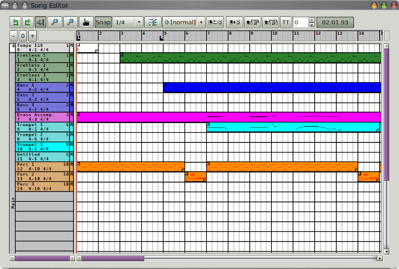

-
Top bar.
These controls support undo/redo, follow-progress,
zoom, snap, entering "triggers", transposition, and editing
the layout. Also shows the time duration of the layout.
-
Time line.
Provides for vertical zoom and the markers "L" and "R" for
looping.
The L/R markers can be moved;
a starting position can be set.
-
Names panel.
Shows much the same information as does a pattern slot.
Shows the mute status.
A track can be clicked here to toggle its mute status.
The pattern color selected is shown here, helpful
in grokking the layouts.
-
Piano roll.
The piano roll shows the layout of the patterns in a song.
It starts out empty, then one can paint layouts of
each track.
The layouts can snap to a given resolution, and
can be split, moved, or deleted.
They show the pattern color.
The File / Export / Export song action can
be used to save the song in a format that
other sequencers can read.
-
Triggers.
Triggers control playback: when
and how long a pattern plays, and how the
pattern is transposed.
Triggers allow patterns to be reused in very
powerful ways. See
Kraftwerk-Europe_Endless-reconstructed.midi
in the midi
installation directory. Triggers
compress the original MIDI file by a factor
of ten.
|
-
Colors.
Note that the colors of each layout
match the color of the pattern, if
a color was assigned.
|
|

|
| Song/Performance Editor |
|